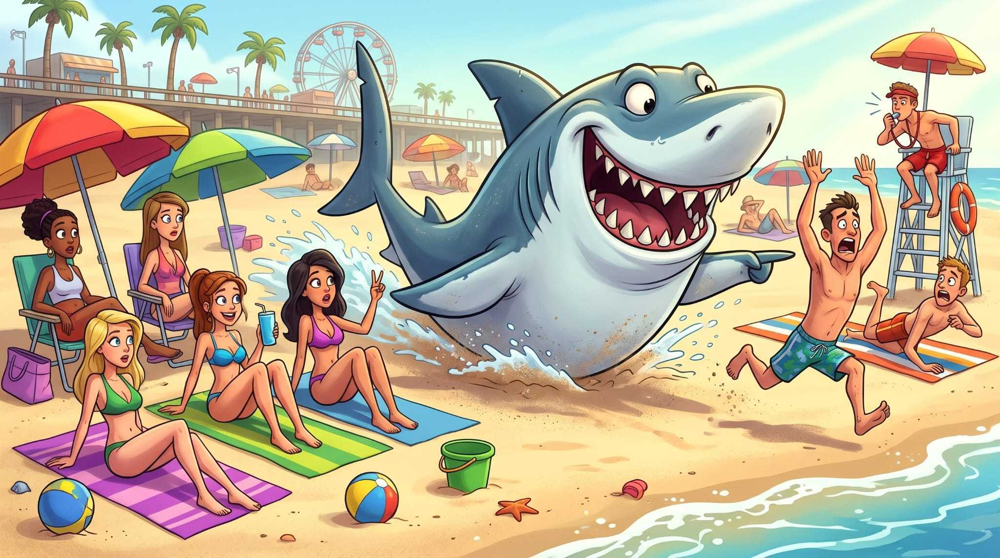

A deep dive into shark encounters
Sharks are not sexist,
men are.
Research for JAWS Chronicles
by Iron Fact, a data analytics consulting agency
01 The big question
Why are men the predominant victims of shark attacks?
Is it the shark, or the situation?
02 Our hypothesis
More risk.
More exposure.
More encounters?
Men are the main victims of shark attacks. Our hypothesis is that this is largely due to reckless behaviour and their greater participation in activities where shark encounters can occur.
A hypothesis to test, not a conclusion. Participation and exposure matter when interpreting attack counts.